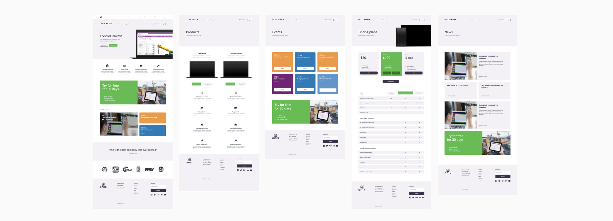
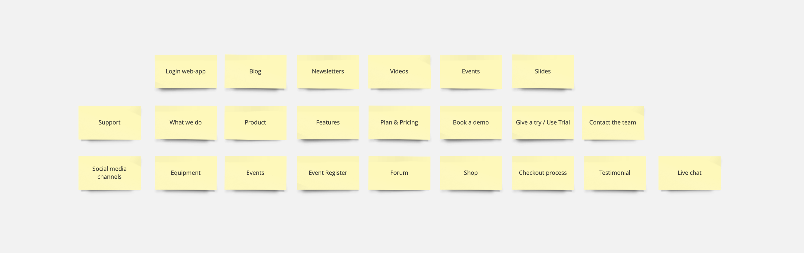
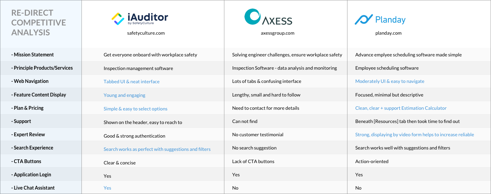

Redesign Onix Website
Onix AS
Date: Apr 2017
Team: Developer, Designer & Marketing Manager
My role: Visual Designer & Project Manager
Onix.com is to help customers learn about Onix's core product - Onix Work - as well as an efficient tool to support customers, also up-to-date the upcoming releases and events of the company.
Background Information
Onix is a technology firm, offers software solutions to clients in the lifting industry in Scandinavian. The onix.com mission is to afford every buyer with confidence when buying and using Onix Work application. The company wanted to develop a clear UX strategy for Onix Work that provides its target users with real value and instant support services.
Project Brief
"Redesign the Information Architecture (IA) and key pages layout/wireframes of Onix Work website. Especially focus on Onix Work product."
...
Process
Project Research > Competitor Analysis > User Personas > Sitemap > Wireframe > Prototype
Become Familiar with the Content
At the very first step, it's important to inspect the website asset that's available to understand business context, project requirements and what needs to be improved. Taking this as the valuable materials, I walked through the current site page by page and pull out all the content. This way, I can figure out what content is crucial, what content should be reinstruct. I typically start with the main navigation and keep going down to get overall.
Keys finding:
- The current site was so generic. Like an informative site, it had not focused enough on the company's key products which were the most important.
- Weak IA. Most links were not accessible through top navigation and were hidden within the content.
- Limitation of CTA buttons. The website just displayed one CTA only on a few pages. It made users confuse sometimes and didn't know what they can do next.
By talking to various people on the team, I was able to get a better picture of the project’s scope, identify the website focus, workflow, content, and features. From there, we came up with the following core types of content (some new, some existing):
Competitor Analysis
Besides, I undertook an analysis of in-direct competitors in the marketplace include iAuditor, Axess and Planday who provides similar services, to get an understanding of the overall experience these websites provide to the users.
- iAuditor.
iAuditor can be used as an inspector software that provides visibility and insights to help raise safety and quality standards across an organization. - Planday.
Planday is a software allows users to build an employee schedule faster by taking into account staff vacation, availability, payroll costs. - Axess.
Axess offers a web application that automates and streamlines the entire inspection program and reporting processes. The app provides clients in control of their equipment.
The evaluation was given based on some criterias:
